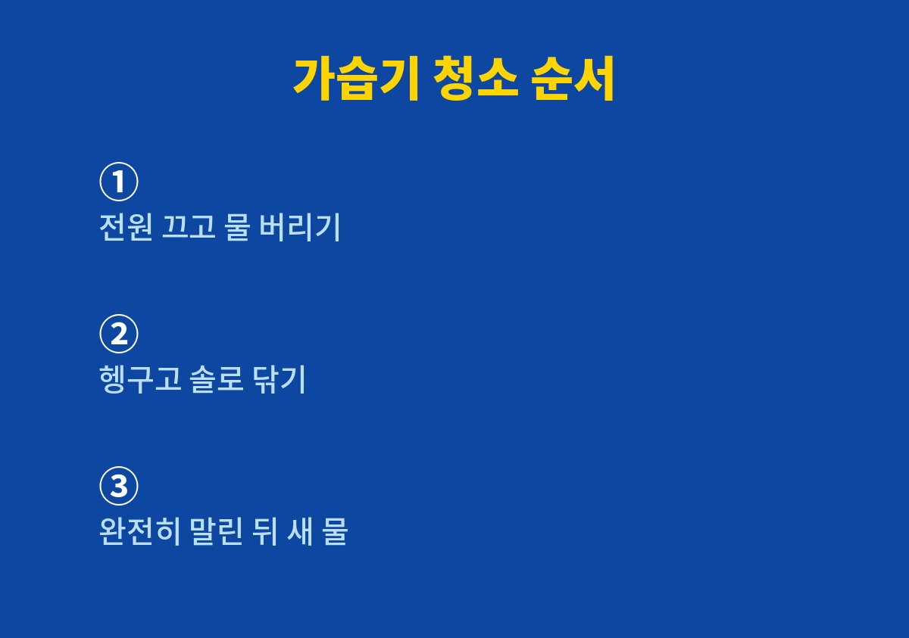

이 글은 겨울마다 가습기를 켜면서도 청소를 어떻게, 얼마나 자주 해야 할지 막막한 사람을 위해 쓴 글이다.
2026년 11월 기준으로 제품 설명서와 공공기관이 반복해서 강조하는 관리 원칙을 바탕으로, 우리 집에서 직접 바꾼 습관을 정리했다.
나도 한동안 물이 줄면 위에 더 붓기만 했는데, 물통 바닥을 들여다본 날 생각이 완전히 바뀌었다.
아이 방이 건조하다는 말에 가습기를 들인 첫해에는 물만 부지런히 채웠다.
어느 날 물통을 비우다가 바닥과 모서리에 미끈한 막이 붙어 있는 것을 보았다.
손으로 문지르니 쉽게 밀려 나왔고, 그동안 이 물이 방 안으로 나가고 있었다는 생각에 마음이 불편했다.
그날 이후로 가습기는 켜는 기계가 아니라 관리하는 기계라고 생각하게 되었다.
바쁜 아침에는 남은 물을 버리지 않고 위에 새 물을 붓는 일이 많았다.
고인 물은 시간이 지날수록 물때가 생기기 쉬운데, 새 물을 섞으면 깨끗해진 것처럼 착각하게 된다.
쇼핑몰 주문 처리로 하루가 정신없이 지나가다 보니 이 습관을 알아차리는 데도 꽤 오래 걸렸다.
가습기는 초음파식, 가열식, 기화식처럼 방식이 다르고 세척법과 필터 교체 주기도 제품마다 다르다.
그래서 나는 먼저 우리 집 제품 설명서를 꺼내 세척 가능한 부위와 쓰면 안 되는 도구를 표시해 두었다.
공통적으로 강조되는 원칙은 물을 매일 갈고, 세척 후에는 완전히 말리는 것이다.
주의할 점도 분명히 정리했다.
물통에 세정제나 살균 성분을 넣는 방식은 쓰지 않는다.
세척할 때 식초 같은 산성 세정제와 락스 같은 염소계 세정제를 함께 쓰거나 섞지 않는다.
진동판이나 가열부는 거친 수세미로 문지르면 손상될 수 있어 설명서가 안내하는 도구만 쓴다.
| 관리 부위 | 우리 집 관리 주기 | 이렇게 정한 이유 |
|---|---|---|
| 물통 | 매일 비우고 헹굼 | 고인 물에 물때가 생김 |
| 진동판·가열부 | 설명서 안내대로 | 방식마다 세척법이 다름 |
| 필터 | 설명서 교체 주기 확인 | 제품마다 기준이 다름 |
| 본체 겉면 | 주말에 한 번 닦기 | 먼지가 쉽게 쌓임 |
가장 먼저 바꾼 것은 아침에 아이를 깨우고 나서 가습기 물통을 비우는 일이다.
남은 물을 버리고 흐르는 물에 두세 번 헹군 뒤 뚜껑을 열어 엎어 둔다.
처음에는 번거로웠지만 양치하는 시간과 묶어 두니 빠뜨리는 날이 거의 없어졌다.
주말에는 설명서에서 분리 가능하다고 한 부품을 모두 떼어 낸다.
부드러운 솔로 물통 모서리와 뚜껑 홈을 닦고, 진동판은 설명서에 적힌 방법대로만 손질한다.
분해해 보니 평소 헹굼으로는 닿지 않던 뚜껑 안쪽에 물때가 가장 많이 남아 있었다.
세척보다 더 중요하다고 느낀 것은 말리는 시간이다.
젖은 채로 조립하면 다음 날 다시 물때가 생기기 쉬워서, 저녁에 쓸 가습기는 아침에 미리 씻어 둔다.
햇볕이 드는 베란다 쪽에 엎어 두면 저녁 무렵에는 속까지 말라 있다.
이렇게 바꾼 뒤로 물통에서 나던 꿉꿉한 냄새가 사라졌다.
아래 순서는 우리 집 초음파식 가습기를 기준으로 정리한 것이다.
방식이 다른 제품이라면 각 단계에서 설명서의 안내를 먼저 따르는 것이 안전하다.

가습기 청소는 한 번에 몰아서 하는 것보다 매일 비우는 작은 습관이 훨씬 효과가 컸다.
특별한 도구 없이 물을 버리고, 헹구고, 말리는 세 가지만 지켜도 물통 상태가 눈에 띄게 달라졌다.
제품마다 구조가 다르니 처음 한 번은 꼭 설명서를 펼쳐 보고 우리 집만의 관리표를 만들어 두길 권한다.
나는 그 표를 가습기 옆에 붙여 두고 아이와 함께 체크하는 놀이처럼 쓰고 있다.
덕분에 바쁜 날에도 누군가 한 명은 물통을 비우게 되었다.
다음 글에서는 겨울 이불을 집에서 세탁할 때 먼저 확인한 라벨과 건조 순서를 정리할 예정이다.
※ 2026년 기준 공공기관 안내와 개인 경험을 바탕으로 정리한 글이며, 집 구조와 제품에 따라 결과가 다를 수 있어 제품 설명서를 함께 확인하길 바란다.